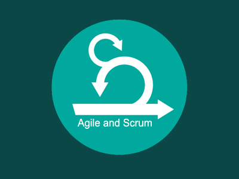

Développeuse DATA IA
Contrôleuse de Gestion
Sales Executive
Anne GILLET
Passionnée de sport, j'ai fait la gymnastique entre
Mes expériences
Mes formations

Formation Développeur DATA IA
7 mois intensifs - 1 an d'alternance en entreprise.

Certification Agile
"Méthodes Agiles de gestion et amorçage de projet"
BAC+5 - Programme Master Grande Ecole
Spécialisation dans la finance/contrôle de gestion, la vente et le management - Bourse au mérite
Classe Préparatoire HEC - Spécialité Maths
BAC Scientifique - Mention Très Bien